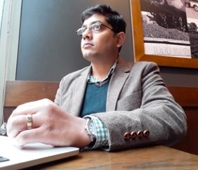

Anirban Guha


Experience:
-
•Sep 2019 - Present: Lecturer, School of Science and Engineering, University of Dundee, UK.
-
•Feb 2019 - July 2019: Humboldt Fellow: Institute of Coastal Research, Helmholtz-Zentrum Geesthacht, Germany.
-
•Dec 2014 - Jan 2019: Assistant Professor, Dept. of Mechanical Engineering, IIT Kanpur, India.
-
•Nov 2013 - Dec 2014: Postdoc, Dept. of Atmospheric and Oceanic Sciences, UCLA, USA.
-
•July 2013 - Oct 2013: David Crighton Fellow, DAMTP, University of Cambridge, UK.
-
•June 2013: PhD, The University of British Columbia, Vancouver.
email: anirbanguhaDOTubcATgmailDOTcom
Significant Awards and Recognitions:
-
• Recognized as an excellent instructor (by student feedback survey), IIT Kanpur Fall Semester 2018.
-
• Alexander von Humboldt Research Fellowship, Govt. of the Federal Republic of Germany, 2018.
-
• Early Career Research Award from the Dept. of Science and Technology, Govt. of India, 2017.
-
• Recognized as an excellent instructor (by student feedback survey), IIT Kanpur Winter Semester 2016.
-
•David Crighton fellowship, Department of Applied Mathematics and Theoretical Physics (DAMTP). University of Cambridge, 2013.
-
• Earl R. Peterson memorial scholarship, The University of British Columbia, 2013.
-
• Faculty of applied science graduate award, The University of British Columbia, 2013.
-
• Four year fellowship, The University of British Columbia, 2009 - 2012.
Updated on 24th Sep 2019
I am a theoretical engineer interested in understanding, and if possible, engineering natural flows. My research interests span (i) surface and internal gravity waves (linear and weakly nonlinear mechanics), (ii) shear instabilities, (iii) vortex dynamics, (iv) dynamical systems, bifurcation and chaos, (v) fish schooling hydrodynamics, (vi) fluid analog of Black/White holes, (vii) particle dispersion, (viii) inverse problems. My work has applications in ocean mixing, wave energy harvesting, off-shore structure protection, mitigating ocean pollution, and turbulence control.
-
•Sep 2019: Paper with Eyal accepted in Physical Review E. (link)
-
•Sep 2019: Paper with Mona published in Journal of Fluid Mechanics (Rapids). (link)
-
•Aug 2019: Paper with Raunak published in Nonlinear Processes in Geophysics. (link)
-
•July 2019: Paper with Mahen and Shadab published in Journal of Fluid Mechanics. (link).
-
•July 2019: Paper with Jeff accepted in Physics of Fluids (Letters). (link)
-
•Mar 2019: Paper with Raunak published in Journal of Fluid Mechanics. (link)
Recent News: